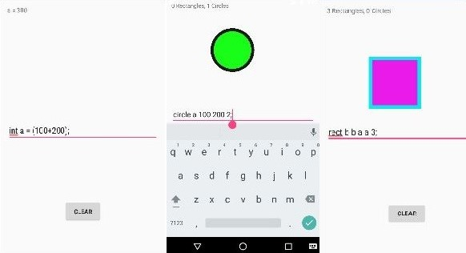
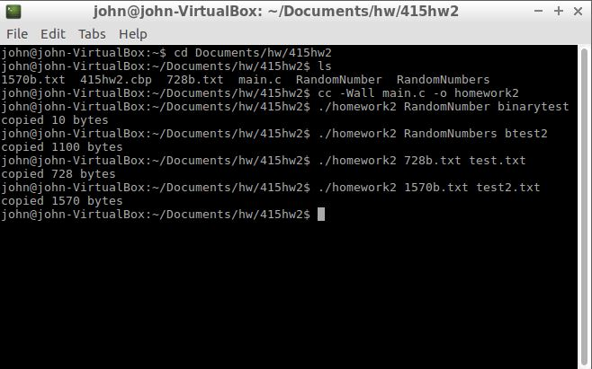
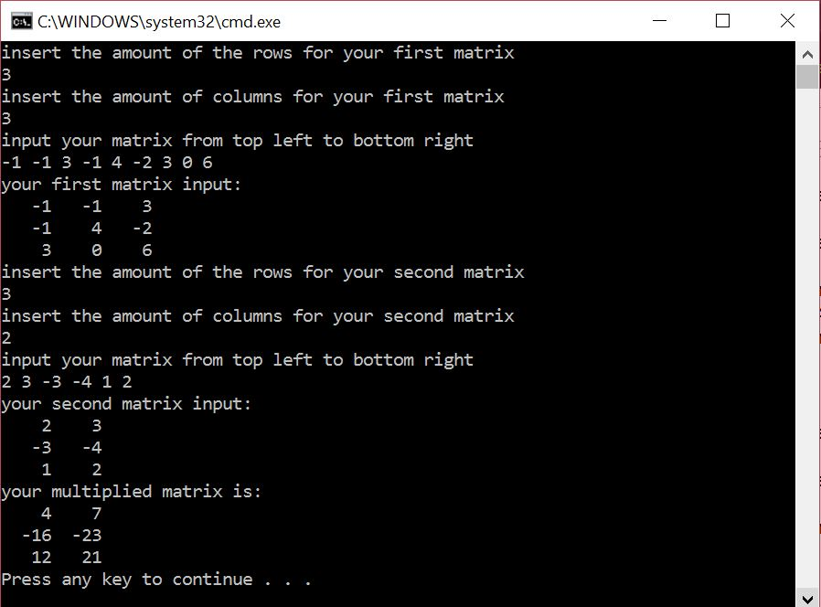

In this project I created an android application that was a shape translator.
The application would draw circles and rectangles in the style which the user inputted.
It used the abstract shape factory pattern and an abstract syntax tree to
parse the language for interpreting.
OS UNIX CP Command

This program was a simple program in C that is similar to cp
command in UNIX. When executed it takes in two command-line arguments
and then tries to open the first argument. If successful,
it creates a file by the second argument without deleting
any existing file. Next the program reads through the first file and stores
it into a 1024 byte buffer. Then it writes from the buffer to the second
file. Once completed it will output the number of bytes copied.
Errors are reported to stderr.
Matrix Multiplication Calculator

This matrix multiplication calculator was done in C++.
First you input the number of rows and then the number of columns for your
first matrix and second matrix and then it multiplies the two matrices and prints the answer.